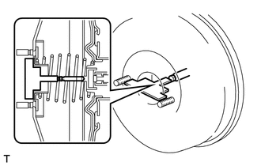
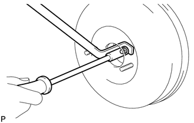

RM3140CG
_54
制动
_023991
制动系统（其他）
_0116361
制动总泵
G
制动系统（其他） 制动总泵 检查
程序

 1.检查并调节制动助力器推杆
1.检查并调节制动助力器推杆
- 备注：
-
在制动助力器总成为非真空的状态下进行调节。（发动机停机时，踩下制动踏板数次。）
- 提示：
- ·
更换为新的制动总泵分总成时，需要调节制动助力器推杆。
- ·
重新使用拆下的制动总泵分总成和用新的制动助力器总成更换时，无需调节制动助力器推杆。
a.
在附属工具的端部涂抹白垩粉。
- 提示：
-
新制动总泵分总成包括附属工具。
b.

1.917,1.25 1.917,1.583
false
2.448,1.01 2.448,1.635
false
1.854,1.594 2.375,1.906
0.521,0.313
10
*a
2.396,1.646 2.875,1.844
0.479,0.198
10
*b
| *a | 附属工具 |
| *b | 制动助力器推杆 |
将附属工具放置在制动助力器总成上。
c.
测量制动助力器推杆和附属工具之间的间隙。
- 标准间隙:
0 mm (0 in.)
- 提示：
-
在下列情况下调节间隙：
·
如果附属工具和制动助力器总成壳（附属工具未接触到制动助力器总成主体）之间有间隙，则制动助力器推杆凸出过度。
·
如果白垩粉没有粘到制动助力器推杆的端部，则制动助力器推杆凸出长度不足。
d.

0.656,0.635 1.125,0.521
true
0.281,0.552 0.875,0.771
0.594,0.219
10
false
SST
如果间隙不符合规定，则使用 SST 固定制动助力器推杆并使用 7 mm 套筒螺丝刀转动制动助力器推杆端部，以调节制动助力器推杆长度。
- SST
- 09737-00020
- 提示：
-
调节后，再次检查制动助力器推杆间隙。